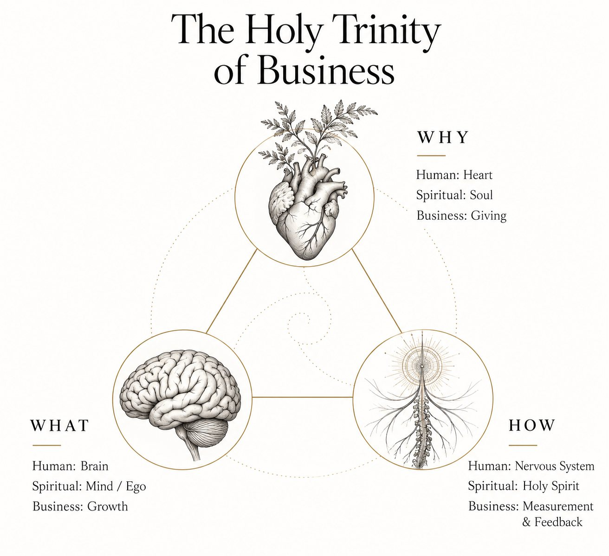
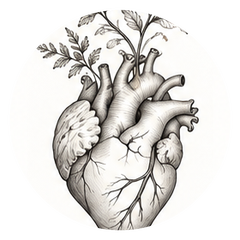
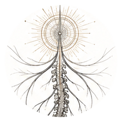

Your primary metric card
Does it pass all four tests?
Primary Giving metric
Growth-to-Give · The Giving Workbook
This workbook helps you connect your mission to your measurement.

Where this workbook sits
Growth-to-Give is one living system seen three ways. The heart is your WHY, the brain is your WHAT, and the nervous system is your HOW. They are distinct, and they cannot be separated. This workbook begins at the heart.

Heart · Soul · Giving
You are hereBrain · Mind / Ego · Growth
Next workbook
Nervous System · Holy Spirit · Measurement & Feedback
Woven throughGiving defines success. Growth funds success. Alignment guides success.
Five stages take you from why your work exists to one Giving metric and an annual target. Write freely; nothing here is a commitment until the last page. Your answers stay in this browser on this device.
Most planning starts with how much you want to grow. We start with what you're growing for.
Giving: the purpose you carry into the world.
Purpose isn't only what you push out into the world. It also shows up in what comes back to you.
Receiving: the signals already flowing toward you.
Now look at who appears in your answers.
Last, look past this year.
Read back over your answers and notice the words that repeat. Use the sentence starter if it helps; it's a scaffold, not a rule.
Before moving on, check your draft:
Your mission, who you serve, the change you want to create, and the contribution through which it happens.
What success means here. Success is defined by the change in others and the ripple that change sends into the world, through families, teams, communities and the places they touch. It is never defined by revenue, followers or volume; those come back in Growth, where they belong.
Imagine it's one year from today. Describe three moments with someone, or something, you served.
The signal is the nervous system at work: success is something you can sense, not only hope for.
You've described success as it looks from the outside. Next, separate what you do from what actually changes.
What you do is not the same as what changes.
| Step | Meaning | Workshop example |
|---|---|---|
| Activity | What we do | Host a workshop |
| Output | What we deliver | 40 attendees |
| Outcome | What changes | People gain clarity and take action |
List your main offerings, paid and unpaid. Paid work counts as Giving when it produces the change; what makes it count is the outcome, not whether money changed hands.
| Activity | Output | Outcome |
|---|
The unit is what you count when the outcome happens. It isn't always "people helped."
For abstract or experiential missions, three tests help:
A metric you can't sense is a metric you can't learn from.
Every metric carries a level. The level tells you what the number can and cannot prove. Call a metric what it is: a book sale is reach, and attendance is engagement at most.
Your contribution reached someone. Sales, downloads, attendance.
Doesn't prove anyone read, used or changed.
They actively took part. Completions, questions, follow-up bookings.
Doesn't prove anything changed.
They did something differently. Follow-up check-ins, observed adoption.
Doesn't prove it led to the result.
The change you exist for happened. Milestones, decisions implemented, acres restored.
Doesn't prove you were the only cause.
Choose the themes closest to your mission. You'll see only their metrics.
Pick one primary metric and up to two supporting ones. Supporting metrics usually pair one for scale (reach or engagement) with one for depth (behavior change or impact).
Aspiration first. Growth will test what it takes, and Measurement & Feedback will revisit it during the year.
What will it take? Compensation, operating needs and channel economics that fund this target.
Are we fulfilling our purpose? Signals that guide decisions through the year.